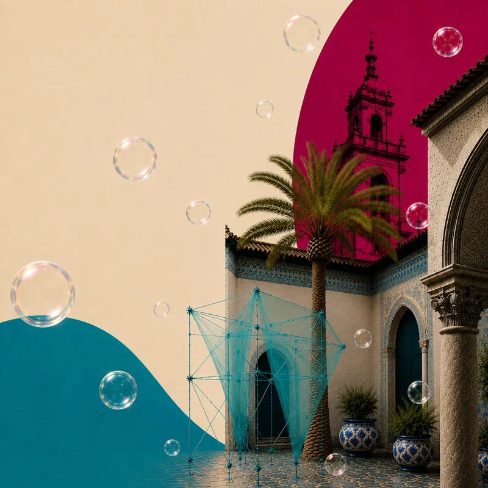

Owner and organiser
Owner and organiserFundación Artdecor
Founded in Córdoba in early 2020 to transform the city through its artists and culture, guided by three compasses: citizenship, culture and sustainability.
Córdoba has been the same city for centuries. For a few weeks, we want it to be another.
We believe walking is the best way into a museum. That heritage is not a stage set to preserve, but a place from which to keep creating. That a work can last a month and stay in the memory for years.
We don't organise events: we spark moments that only happen once. The city is the gallery, and the walk from one work to the next is part of the work too.
We are not going to change Córdoba. We are going to change how you see it.
Light structures, shade and canopies that last for days and change forever how you remember a place.
Each work has its own film, which expands it and keeps it on record.
Music, poetry, dance, photography and food in conversation with heritage.
Grants, workshops and open activities. The festival is complete when someone decides to take part.
The first edition revolved around care in the face of climate change, using the same resources Córdoba has always used against the heat. In the talks, the river came up again and again as the city's backbone and as intangible heritage.

EFÍMERA grows out of Córdoba, Ciudad de las Ideas (Córdoba, City of Ideas), Fundación Artdecor's project to transform the city through its artists and its people. 2026 was the first stone of a long road: making Córdoba an international reference for contemporary intervention in heritage.
Owner and organiserFounded in Córdoba in early 2020 to transform the city through its artists and culture, guided by three compasses: citizenship, culture and sustainability.
 Artistic direction · Efímera Lab
Artistic direction · Efímera LabA studio combining cutting-edge technology with natural materials. Its research on drones and 3D textiles has been presented at ACADIA and the Dezeen Awards.
 With
WithLondon's AA School takes part through its summer programme: its students work at the Efímera Lab alongside local, national and international participants.
Co-founder of MuDD Architects. Leads the Efímera Lab.
Musician and producer (Eureka) and president of Fundación Artdecor. Latin Grammy nominee; he has worked with Rosalía, Estrella Morente and Niño de Elche.
World Heritage. Patios, chapels and palaces that open their doors to contemporary creation.
Anything missing? Write to us